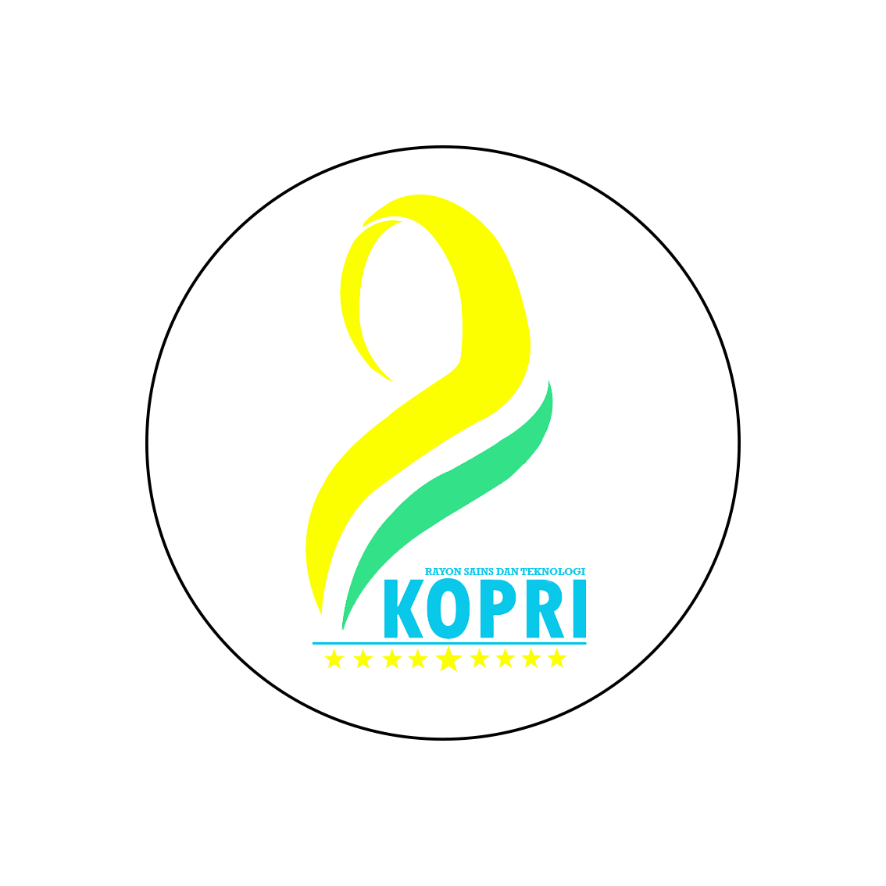

Pendampingan Kasus
Pendampingan penyintas kekerasan seksual dan perundungan berbasis gender, bersama Bidang Advokasi.
Lapor lewat Layanan AdvokasiKorps PMII Putri
Ruang tumbuh kader perempuan PMII Rayon Sains dan Teknologi: belajar berpikir kritis, berani bersuara, dan siap memimpin — di kampus maupun di tengah masyarakat.

Tentang
KOPRI — Korps PMII Putri — adalah badan semi otonom PMII yang menjadi wadah kaderisasi dan pemberdayaan kader perempuan. KOPRI lahir pada 25 November 1967 di Semarang, dan sejak itu menjadi ruang bagi kader putri untuk mengasah kepemimpinan tanpa harus menunggu diberi tempat.
Di Rayon Sains dan Teknologi, KOPRI hadir dengan tantangan yang khas. Fakultas Sains dan Teknologi masih menjadi ruang yang sering dianggap "bukan tempat perempuan". Karena itu kerja KOPRI di sini tidak berhenti pada kajian gender: ia juga soal memastikan kader putri percaya diri di laboratorium, di forum ilmiah, di organisasi, dan di ruang pengambilan keputusan.
KOPRI bekerja beriringan dengan seluruh bidang di rayon. Kaderisasi berjalan bersama, advokasi ditangani bersama — dengan catatan khusus: setiap kasus kekerasan seksual dan perundungan berbasis gender didampingi KOPRI mengikuti prinsip survivor-centered.
Program
Terbuka untuk seluruh kader putri Rayon Sains dan Teknologi. Sebagian agenda juga terbuka untuk umum.
Pendampingan penyintas kekerasan seksual dan perundungan berbasis gender, bersama Bidang Advokasi.
Lapor lewat Layanan AdvokasiDiskusi santai bulanan: karier, riset, kesehatan mental, dan pengalaman menjadi perempuan di Saintek.
Kelas menulis, kajian tematik, dan pengelolaan buletin literasi kader putri.
“Perempuan yang terdidik akan mendidik satu generasi. Maka jangan pernah berhenti belajar.”
Semua kader putri otomatis menjadi bagian dari KOPRI setelah mengikuti MAPABA. Tidak ada pendaftaran terpisah — cukup ikuti MAPABA SAINTEK Ke-XVII, dan sampaikan pada panitia bahwa kamu ingin aktif di KOPRI.